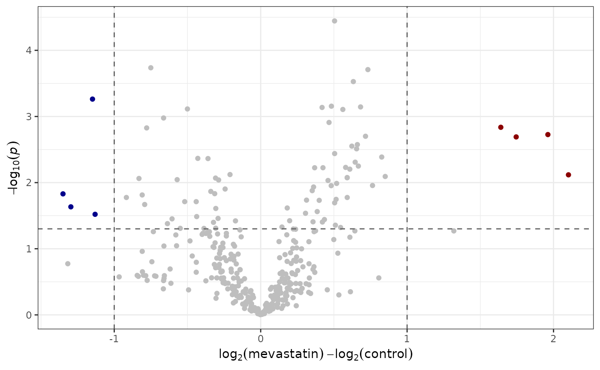
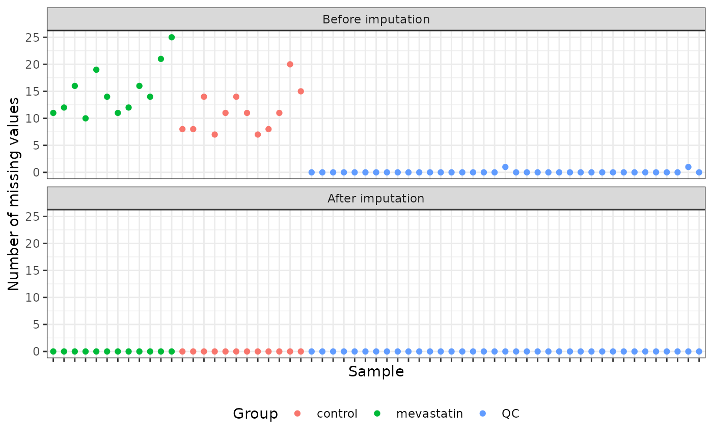
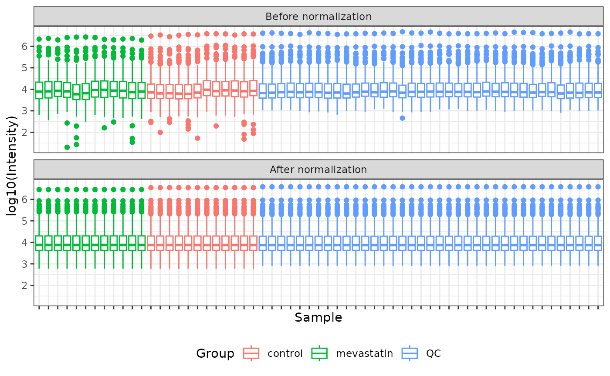

This vignette shows you how to work with metabolomics data using the metamorphr package. It is intended as a quick overview and the choices made (e.g., the algorithm for missing value imputation or normalization) may not be the best for the specific data set.
Introduction
Metabolomics data preparation usually involves several steps: Feature tables are filtered to only contain ‘significant’ features, missing values are imputed, intensities are normalized, and, depending on the downstream analysis, data might also be scaled or transformed. The metamorphr package was developed to make these steps more streamlined and easier to perform. An example workflow is shown below. The goal of the workflow is to create a volcano plot that compares cells treated with the HMG-CoA reductase inhibitor mevastatin to cells treated with a vehicle control.
The whole workflow
For a quick reference, the workflow is shown as a whole below. The individual steps are explained in detail further down.
The metamorphr package was developed to be used with a pipe operator and this vignette makes extensive use of it. Make sure that you are familiar with the concept of the pipe before reading on. Also, this vignette uses the magrittr pipe instead of the native pipe to make it compatible with older versions of R. You should be able to use the native pipe as a drop-in replacement for the magrittr pipe, if you wish.
mevastatin_ft <- read_featuretable(
"https://raw.githubusercontent.com/yasche/metamorphr-data/main/RP18/pos/MetaboScape/mevastatin/mevastatin.csv",
label_col = 3,
metadata_cols = 1:15)
mevastatin_metadata <- readr::read_csv(
"https://raw.githubusercontent.com/yasche/metamorphr-data/main/RP18/pos/MetaboScape/mevastatin/mevastatin_metadata.csv",
show_col_types = FALSE)
mevastatin_ft %>%
join_metadata(mevastatin_metadata) %>%
filter_grouped_mv(min_found = 0.75,
group_column = Group) %>%
filter_blank(blank_samples = "blank",
blank_as_group = T,
group_column = Group) %>%
filter_cv(reference_samples = "QC",
ref_as_group = T,
group_column = Group) %>%
dplyr::filter(Group != "blank") %>%
impute_knn() %>%
normalize_quantile_smooth() %>%
collapse_mean(sample_metadata_cols = "Group",
feature_metadata_cols = "Feature") %>%
plot_volcano(group_column = Group,
name_column = Feature,
groups_to_compare = c("control", "mevastatin")) +
ggplot2::geom_hline(yintercept = -log10(0.05),
color = "grey40",
linetype = 2) +
ggplot2::geom_vline(xintercept = c(- 1, 1),
color = "grey40",
linetype = 2) +
ggplot2::theme_bw()
Read the required files
This vignette uses data from a separate GitHub repository. More information about the data can be found there.
Read the feature table
The first step in the workflow is to read a feature table. The
metamorphr package contains a convenience function,
read_featuretable, that reads files containing delimiter
separated values, for example files in the csv format, and performs
several initial tidying steps to bring them in the correct format.
read_featuretable can read files from disk but also literal
data and data from the internet. We use the latter to download data from
a GitHub
repository.
mevastatin_ft <- read_featuretable(
"https://raw.githubusercontent.com/yasche/metamorphr-data/main/RP18/pos/MetaboScape/mevastatin/mevastatin.csv",
label_col = 3,
metadata_cols = 1:15)With the label_col argument, we specify that the values
in column 3 in mevastatin.csv
are used as feature labels (in this case the exact mass). Those values
are stored in a column named Feature. Further, with the
metadata_cols argument we specify that columns 1 to 15
contain feature metadata, for example retention time and collision cross
section (CCS). Those are preserved but it is important to tell
read_featuretable which columns contain metadata so the
parsing and initial tidying work as expected.
In addition to the Feature column and the preserved
metadata columns, several other columns are created automatically by
read_featuretable:
UID: a column containing a unique identifier for each featureSample: a column containing the sample namesIntensity: the measured intensity (or area) for a specificSampleFeaturecombination.
head(mevastatin_ft)
#> # A tibble: 6 × 18
#> UID Feature Sample Intensity FEATURE_ID RT CCS SIGMA_SCORE
#> <int> <chr> <chr> <dbl> <dbl> <dbl> <dbl> <dbl>
#> 1 1 186.015 QC_1_07-Aug-24_… 745. 1 13.6 133. NA
#> 2 2 837.83232 QC_1_07-Aug-24_… 1256. 2 24.5 152. NA
#> 3 3 1403.71298 QC_1_07-Aug-24_… NA 3 24.7 341. NA
#> 4 4 769.84309 QC_1_07-Aug-24_… 3594. 4 24.8 222. NA
#> 5 5 1539.68908 QC_1_07-Aug-24_… NA 5 24.9 354. NA
#> 6 6 218.07551 QC_1_07-Aug-24_… NA 6 26.0 151. NA
#> # ℹ 10 more variables: NAME_METABOSCAPE <chr>, MOLECULAR_FORMULA <chr>,
#> # ADDUCT <chr>, KEGG <chr>, CAS <chr>, MaxIntensity <dbl>,
#> # Condition_QC_MeanIntensity <dbl>, Condition_BLANK_MeanIntensity <dbl>,
#> # Condition_Control_MeanIntensity <dbl>,
#> # Condition_Treatment_MeanIntensity <dbl>Read the sample metadata
Sample metadata, for example group information or replicate number,
is required for some of the functions. An empty metadata table with
required columns and rows can be created from an existing feature table
via create_metadata_skeleton and exported and edited by
hand, for example in Microsoft Excel. After editing, the file can be
read back into R using readr::read_csv.
mevastatin_ft %>%
create_metadata_skeleton() %>%
readr::write_csv(file = "some/path/menadione_metadata.csv")
mevastatin_metadata <- readr::read_csv("some/path/menadione_metadata.csv")In this case, there is already a file containing the relevant metadata in the GitHub repository.
mevastatin_metadata <- readr::read_csv(
"https://raw.githubusercontent.com/yasche/metamorphr-data/main/RP18/pos/MetaboScape/mevastatin/mevastatin_metadata.csv",
show_col_types = FALSE)
head(mevastatin_metadata)
#> # A tibble: 6 × 5
#> Sample Group Replicate Batch Factor
#> <chr> <chr> <dbl> <dbl> <dbl>
#> 1 B9_Comp_1_08-Aug-24_10235 mevastatin 1 1 1
#> 2 B9_Comp_1_10-Aug-24_10378 mevastatin 1 1 1
#> 3 B9_Comp_1_11-Aug-24_10517 mevastatin 1 1 1
#> 4 B9_Comp_2_08-Aug-24_10236 mevastatin 2 1 1
#> 5 B9_Comp_2_10-Aug-24_10379 mevastatin 2 1 1
#> 6 B9_Comp_2_12-Aug-24_10522 mevastatin 2 1 1The metadata table must include the following columns:
Sample: Contains the sample names.Group: Contains group information.Replicate: Replicate information. If multiple replicates of the same sample exist (e.g., the same sample was injected multiple times) they must have the same replicate number.Batch: Samples belonging to the same batch must have the same batch number.Factor: A sample specific factor, for example protein concentration or dry weight. Only necessary for specific normalization strategies.
Join them together
metamorphr provides a convenience function,
join_metadata, for joining together a feature table and
associated metadata.
mevastatin_ft <- join_metadata(mevastatin_ft, mevastatin_metadata)Filter
In this workflow, filter functions are used to improve the overall
data quality. In the R console, you can type
metamorphr::filter_ to see all available filter functions.
dplyr::filter is used to remove blank samples
afterwards.
mevastatin_ft <- mevastatin_ft %>%
filter_grouped_mv(min_found = 0.75,
group_column = Group) %>%
filter_blank(blank_samples = "blank",
blank_as_group = T,
group_column = Group) %>%
filter_cv(reference_samples = "QC",
ref_as_group = T,
group_column = Group) %>%
dplyr::filter(Group != "blank")In this workflow, 3 filter functions are used sequentially:
filter_grouped_mv: To only keep features with a low rate of missing values. With default parameters, only features are kept if they were found in at least 75 % of the samples of at least 1 group.filter_blank: To remove features that were found with a high intensity in blank samples. With default parameters, only features are kept were the maximum intensity in non-blank samples is at least 3 times as high as in blank samples.filter_cv: To remove features with a poor reproducibility (i.e., with a high coefficient of variation, CV) in quality control samples. With the default parameters, only features with a maximum CV of 0.2 are kept.
Imputate missing values
The data contains missing values (i.e., NA). Those
should be imputed prior to creating a volcano plot. For this example,
the k-nearest
neighbors algorithm is used for imputation but the metamorphr
package provides other options as well. Start typing
metamorphr::impute_ in the R console to see the available
options.
The underlying design of the metamorphr package makes it very easy to visualize the data using ‘ggplot2’. Below, a simple visualization is used to verify that the imputation worked as expected.
mevastatin_ft_before_impute <- mevastatin_ft %>%
dplyr::mutate(State = "Before imputation")
mevastatin_ft <- impute_knn(mevastatin_ft)
mevastatin_ft %>%
dplyr::mutate(State = "After imputation") %>%
dplyr::bind_rows(mevastatin_ft_before_impute) %>%
dplyr::mutate(State = factor(State,
levels = c("Before imputation",
"After imputation"))) %>%
dplyr::group_by(State, Sample, Group) %>%
dplyr::count(wt = is.na(Intensity)) %>%
ggplot2::ggplot(ggplot2::aes(Sample, n, color = Group)) +
ggplot2::geom_point() +
ggplot2::facet_wrap(~State, nrow = 2) +
ggplot2::ylab("Number of missing values") +
ggplot2::theme_bw() +
ggplot2::theme(axis.text.x = ggplot2::element_blank(),
legend.position = "bottom")
As expected, there are no missing values after imputation.
Normalize
Next, intensities are normalized across samples. In this example, a
smooth quantile normalization is used (Hicks et al., 2018). This
algorithm requires sample metadata, more specifically, grouping
information. Other available options can be viewed by typing
metamorphr::normalize_ into the R console.
mevastatin_ft_before_norm <- mevastatin_ft %>%
dplyr::mutate(State = "Before normalization")
mevastatin_ft <- normalize_quantile_smooth(mevastatin_ft)Again, we can use a ‘ggplot2’ visualization as verification.
mevastatin_ft %>%
dplyr::mutate(State = "After normalization") %>%
dplyr::bind_rows(mevastatin_ft_before_norm) %>%
dplyr::mutate(State = factor(State,
levels = c("Before normalization",
"After normalization"))) %>%
ggplot2::ggplot(ggplot2::aes(Sample, log10(Intensity), color = Group)) +
ggplot2::geom_boxplot() +
ggplot2::facet_wrap(~State, nrow = 2) +
ggplot2::ylab("log10(Intensity)") +
ggplot2::theme_bw() +
ggplot2::theme(axis.text.x = ggplot2::element_blank(),
legend.position = "bottom")
The normalization worked as expected. The distributions of intensities inside each group are identical.
Collapse technical replicates
In the example data set, the same sample was injected 3 times. Prior
to doing statistics and drawing the volcano plot, those technical
replicates should be collapsed. The metamorphr package provides several
approaches to do this. Start typing metamorphr::collapse_
into the R console to see the available options. For this workflow, we
will simply calculate the mean of the technical replicates using
collapse_mean. It is important that sample metadata are
provided for this approach.
mevastatin_metadata
#> # A tibble: 73 × 5
#> Sample Group Replicate Batch Factor
#> <chr> <chr> <dbl> <dbl> <dbl>
#> 1 B9_Comp_1_08-Aug-24_10235 mevastatin 1 1 1
#> 2 B9_Comp_1_10-Aug-24_10378 mevastatin 1 1 1
#> 3 B9_Comp_1_11-Aug-24_10517 mevastatin 1 1 1
#> 4 B9_Comp_2_08-Aug-24_10236 mevastatin 2 1 1
#> 5 B9_Comp_2_10-Aug-24_10379 mevastatin 2 1 1
#> 6 B9_Comp_2_12-Aug-24_10522 mevastatin 2 1 1
#> 7 B9_Comp_3_08-Aug-24_10237 mevastatin 3 1 1
#> 8 B9_Comp_3_10-Aug-24_10380 mevastatin 3 1 1
#> 9 B9_Comp_3_12-Aug-24_10523 mevastatin 3 1 1
#> 10 B9_Comp_4_08-Aug-24_10238 mevastatin 4 1 1
#> # ℹ 63 more rowsIt is important that Group and Replicate
information is provided as well as Batch. Technical
replicates of the same sample must have the same value for
Group, Batch and Replicate. For
example, B9_Comp_1... belongs to group
mevastatin and was injected 3 times as indicated by the
three samples with replicate number 1.
mevastatin_ft <- collapse_mean(mevastatin_ft,
sample_metadata_cols = "Group",
feature_metadata_cols = "Feature")Plot
Finally, data can be plotted with plot_volcano. The
resulting plot can be easily modified with ‘ggplot2’ functions.
plot_volcano(mevastatin_ft,
group_column = Group,
name_column = Feature,
groups_to_compare = c("control", "mevastatin")) +
ggplot2::geom_hline(yintercept = -log10(0.05),
color = "grey40",
linetype = 2) +
ggplot2::geom_vline(xintercept = c(- 1, 1),
color = "grey40",
linetype = 2) +
ggplot2::theme_bw()